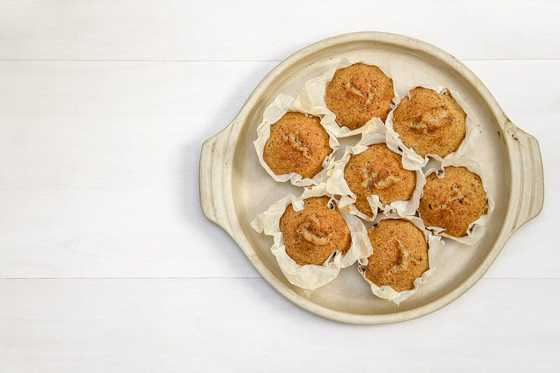
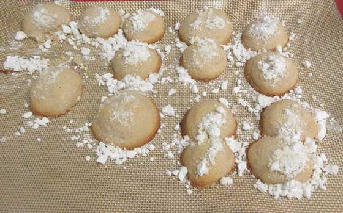

SHELF
棚に並ぶ、焼きたての顔ぶれ(イメージ)
金物店の棚が並ぶ店内に、日替わりで約30種類のパンが並ぶと紹介されています。ここに並ぶ写真は雰囲気を伝えるためのイメージです。
写真はフリー素材のイメージで、お店や商品を写したものではありません。







VOICE
こんな声が聞こえそう
以下は制作側が作成したイメージ例です。実在のお客様の声ではありません。
イメージ例
「あんバターを買いに行ったら、金物店の棚の奥にパンが並んでいて、ちょっと不思議で楽しい気分に。」
イメージ例
「日替わりでいろいろ並ぶので、迷いながら選ぶ時間もごちそう。サンドは具がたっぷりでした。」
イメージ例
「地元にこういうパン屋さんがあるのはうれしい。次は焼き菓子もゆっくり選びたいです。」
ABOUT
お店のこと

- 金物店の中のパン屋
Instagramのプロフィールでは「島根県川本町で80年続く堀井金物店内で」と紹介されています。 - はじまり
「パン好きのオーナーが地元にパン屋を」と、2022年11月に堀井金物店の店内でオープンしたと地元メディアが紹介しています。 - こだわり
国産小麦と島根の食材を取り入れ、丁寧に作るパンとおやつ。パンの発送にも対応しているとのことです。 - 店名について
「とまり木」の意味は確認できていません。制作側のイメージとして、旅の途中で羽を休める枝のように、ひと息つける場所を思い浮かべました。
ACCESS
アクセス・ご案内
| 所在地 | 〒696-0001 島根県邑智郡川本町川本623-8(堀井金物店内) |
|---|---|
| 電話 | 準備中 |
| 営業時間 | 準備中(営業日はInstagramでお知らせ) |
| 定休日 | 準備中 |
| @tomarigi_pantooyatu_ |